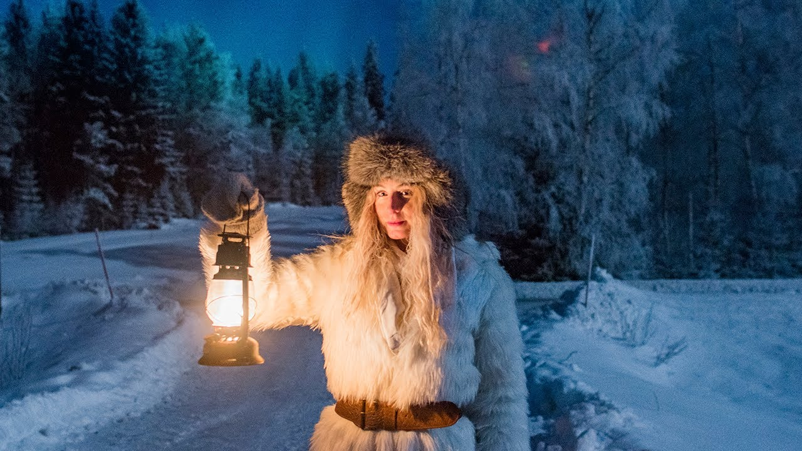

【Vlog生活口语：瑞典极地之光：午夜太阳与极夜奇观｜黑暗中的生存智慧｜与自然共舞的生命哲学｜油管两千万播放 @Jonna Jinton】
Summary: Sweden experiences extreme contrasts in light conditions between summer and winter due to its northern latitude. The midnight sun provides 24-hour daylight during summer, while the polar night brings weeks without sunlight in winter. These conditions significantly impact daily life, energy levels, and creative work. Despite the challenges, residents develop strategies to adapt, including outdoor activities, ice baths, and harvesting natural resources. The changing seasons create unique beauty and inspire appreciation for nature's cycles.
摘要： 瑞典北部因纬度较高，夏季会出现24小时白昼的午夜太阳现象，冬季则经历数周不见阳光的极夜。这种极端的光照差异对居民的生活节奏、能量水平和创作工作产生深远影响。当地人通过户外运动、冰浴和采集自然资源等方式适应环境。尽管黑暗期带来挑战，但季节交替创造了独特的自然之美，让人们学会接纳自然节律并与之共舞。

⏱️ Estimated Reading Time: 17 min.
📚 四级生词 📚 六级生词 📚 雅思生词 📚 托福生词 📚 专八生词 📚 SAT生词 📚 考研生词 📚 GRE生词 📚 其它生词
My name is Jonna And I live in the north of Sweden.
Sweden is a country with a lot of light.
And it's also a country with a lot of darkness.
It all depends on what season it is
Just like many other countries in the northern hemisphere there is a strong contrast in the light conditions between summer and winter.
In the winter it's dark almost all the time.
And in the summer it's light all the time.
During the summer in the very north of Sweden the sun never sets between the end of May until the middle of July.
So you can see the sun 24 hours a day
And that is called the midnight sun.
And then, during the winter in the very north of Sweden It's the opposite.
For a couple of weeks the sun never rises above the horizon.
Which means that there is no sunlight for about a month.
And that is called the polar night.
These extreme contrasts in light is caused by the rotation of the earth in relation to the position of the sun.
And the further north you go, the bigger the contrast.
I live in the middle north of Sweden
And if I'm lucky and there is a clear sky I can see the sun above the treetops for about an hour during the darkest time of the year.
It's the middle of the day
And this is how high the sun goes up now.
It's just a little bit over the horizon
Or over the trees.
But winters like this one, when it's been cloudy every day I actually didn't see a glimpse of the sun for over a month.
But just a few days ago, now in the beginning of January I got to feel the sunlight on my face again.
This is the first glimpse of the sun that we see in over a month.
Do you see this?!
And that feeling when you begin to feel the sunlight again in January Is always overwhelming
It's like seeing the sun for the first time in your life.
Even if it can be hard sometimes with these kinds of light conditions I really love it and I would never want to change it.
I think the light is never as beautiful as it is during these most extreme times of the year.
When it's summer I usually change my rhythm and stay up all night and then sleep in the forenoon instead.
The light is so beautiful in the middle of the night.
And as a filmmaker and photographer
It's like a dream to be out and capture the beauty of the bright nights in June.
And then in the winter even if we don't get so much sunlight we at least get a few hours of twilight during the day.
And that light is the most beautiful kind of daylight that I know.
It's like experiencing a long sunrise without a sun.
And when it's a clear sky and the sun is rising just a tiny bit above the treetops
It spreads a soft and pink light all over the landscape.
And that is beyond beautiful.
Around 3 in the day it's already getting dark.
And it makes the evenings feel never ending.
But the darkness makes us see what is never visible in the light.
Because actually we do get sunlight.
From a thousands of suns far, far away.
I live in a place where there is no light pollution.
And the night sky are breathtaking.
And for me, that is one of the reasons that I really love the winter here.
And now and then the sun sends us a greeting in the darkness.
Particles from storms on the surface of the sun comes traveling towards the earth colliding with our magnetic field and creating the Aurora Borelis
The northern lights that dances in the sky.
I can never find the right words to describe how much I love to stand under the northern lights on a cold and dark winter night.
I can take the darkness any day as long as I get to see the stars and the northern lights.
It makes it all worth it.
But even though there is so much beauty to find in these special kinds of light conditions that we have here in the north I would lie if I said that it's always easy to live and adapt to them.
Because it's not.
Well, the summer is easy.
I don't think you can have too much light.
The only thing that people often ask me is if it's harder to sleep when its light all night.
And for me personally, if I want to sleep during the night I have no problem with that.
And for those who do feel like it's a problem
It's easily fixed with some thick and dark curtains.
But the winter and the darkness is definitely much more challenging.
And I can only speak from my own experience now.
The lack of sunlight makes me more tried.
And during the darkest and coldest months between November and March I sometimes struggle to keep up the energy
It's harder to get up in the morning when it's dark outside.
Our body naturally want to wake up with the sun.
And in the afternoon I often get confused with the time
Since the darkness makes it feel like it's much later than it really is.
And the lack of daylight makes me struggle more as a filmmaker
Since I only have 1 hour of good light to film in a day
Compared to the 24 hours of good light in the summer.
So the darkness combined with the cold make things a bit more challenging
And I know that I'm not the only one who are struggling to keep up the energy during this time of the year.
But of course, there is many things you can do to make the winters a little easier.
I want to mention a few things that helps me adapt better to the lack of sunlight.
For me personally, I think that the tiredness that I feel in the winter is the hardest part.
The energy level is so low sometimes
And the cure to that is not always to sleep more.
It can actually be to do the opposite.
So I try my best to keep being active and moving my body as much as I can.
And get as much daylight as possible.
I go for long walks with my dog everyday.
And if the weather is good I like to go out in the forest with my snowshoes and my camera.
Or go skiing.
I also love to take ice baths.
It's something I started doing a few years ago combined with breathing exercises, using the Wim Hof Method.
And it has become my favorite way of boosting myself with new energy when I need it the most.
Going into that freezing water is actually the last thing that my body wants to do in that moment.
Put putting myself into that kind of discomfort is awakening something in me that helps me reset my body.
Believe it or not, but cold swims and cold showers has many good health benefits.
It's not for everyone of course
And it's important to get knowledge before trying an ice bath if you have never done it before.
But for me it has been a great source of energy and joy during the wintertime.
So I really feel a big difference in my energy levels in the winter when I move my body in some way.
It doesn't need to be a full workout.
But just something.
A little every day that makes you feel alive.
When we can't get enough energy from the sun I think it's even more important to make sure that we get enough energy and nutrition from our food.
Nature has so much to give us in the summer that we can harvest and save for the winter when we need it the most.
Here in the north we have plenty of berries in the forest.
So I like to pick tons of blueberries and lingonberries and put in the freezer
So that we can eat berries and drink juice from berries every single day during the whole winter.
I also like to pick different herbs that are good for our health and dry them to make my own tea for the winter.
One of my favorite teas to drink when it's cold and dark outside is simply made out of birch leafs.
I pick them just as they begin to bloom in the spring while they are still small and light green.
And the tea smells and taste just like how it smells like in the spring.
And in the middle of the winter I think it feels so comforting to have a piece of the spring to remind you of the wonderful time to come when everything is blooming and the birds are singing again.
And of course I also take vitamin D supplements since we don't get anything from the sun in many months.
Even though that would never replace the sun, I believe it can help a little bit.
The list of things you can do to handle the darkness is endless.
This were just to mention a few.
But I think that the most important thing of all
Is to accept and adapt to the cycles of nature.
I definitely feel a big difference in the energy during summer and winter
Both in nature and in myself.
And that doesn't mean that it's right or wrong.
It's just different.
I think the winter and the darkness can cause a lot of unnecessary suffering when we are trying to force ourselves to feel the same as we do in the summer.
It's okey to feel tired.
It's okey to feel lack of inspiration.
And it's okey to need more sleep and to let things slow down.
A flower would never force itself to bloom in the cold winter.
So why would we?
This way of thinking changed my way of dealing with the different seasons.
I love the winters just as much as I love the summers
They both have their own benefits and challenges.
And I think it gets much easier when we let go and accept what we feel instead of fighting it.
And accept the cycles in nature and the cycles in ourselves.
And learn to live with it.
Like a dance.
So this is how it is to live with the light and the darkness in the north of Sweden.
from my perspective.
The extreme contrasts in light also creates bigger contrasts to the seasons.
And they all have their own beauty.
I love the constantly changing seasons
And that you can see and feel how the light changes a little bit for every single day that goes by.
The beautiful balance of light and darkness is my greatest source of inspiration.
And it makes every day feel new and different.